Unidad 2: Cinemática de la partícula en una dimensión#
Descripción general#
La cinemática es la parte de la mecánica que describe el movimiento sin estudiar sus causas. En esta unidad se analiza el movimiento de una partícula en una sola dimensión, introduciendo las magnitudes fundamentales que permiten describirlo: posición, desplazamiento, velocidad y aceleración.
El estudio de la cinemática unidimensional permite construir la base conceptual para comprender luego el movimiento en dos dimensiones y, más adelante, la dinámica.
Objetivo de aprendizaje#
Al finalizar esta unidad, el estudiante será capaz de:
Describir el movimiento de una partícula en una dimensión.
Diferenciar posición, trayectoria, distancia recorrida y desplazamiento.
Calcular rapidez media, velocidad media y velocidad instantánea.
Calcular aceleración media e instantánea.
Analizar movimiento rectilíneo uniforme y uniformemente acelerado.
Interpretar gráficas de posición, velocidad y aceleración en función del tiempo.
Resolver problemas básicos de caída libre.
{kind=link}
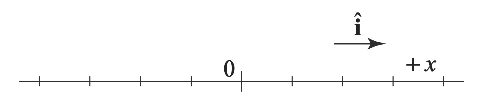
Figura 11 Diagrama de un sistema cartesiano de una dimensión#
1. Introducción a la cinemática#
La cinemática estudia el movimiento de los cuerpos sin considerar las fuerzas que lo producen.
En esta unidad se modela al cuerpo como una partícula, decimos que un cuerpo (persona, objeto, planeta, etc.) se comporta como una partícula cuando sus dimensiones son pequeñas comparadas con otras dimensiones que intervienen en el problema.
Para describir el movimiento se requiere:
Un sistema de referencia.
Un eje coordenado.
Un origen.
Una variable de tiempo.
En una dimensión, el movimiento ocurre a lo largo de una recta, generalmente representada por el eje \(x\).
2. Posición y sistema de referencia#
La posición de una partícula indica su ubicación respecto del origen del sistema de referencia.
Si la partícula se mueve en el eje \(x\), su posición se expresa como:
Esto significa que la posición depende del tiempo.
Interpretación#
Si \(x > 0\), la partícula está a la derecha del origen.
Si \(x < 0\), está a la izquierda del origen.
Si \(x = 0\), está en el origen.
La posición no indica cuánto recorrió el móvil, sino solo dónde se encuentra en un instante.
Sistema de referencia#
Definimos un sistema de referencia como un sistema de coordenadas respecto del cual estudiamos un movimiento de un cuerpo. Este puede ser “Inercial” o “No Inercial”.
Un sistema de referencia, es inercial cuando el observador se encuentra en reposo o se mueve con velocidad constante respecto al objeto estudiado.
{kind=link}
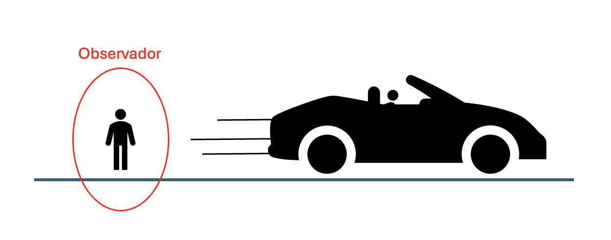
Figura 12 Observador mirando un vehiculo en movimiento#
Por otro lado, un sistema de referencia, es No inercial, cuando el observador se encuentra en aceleración respecto al objeto bajo estudio.
{kind=link}
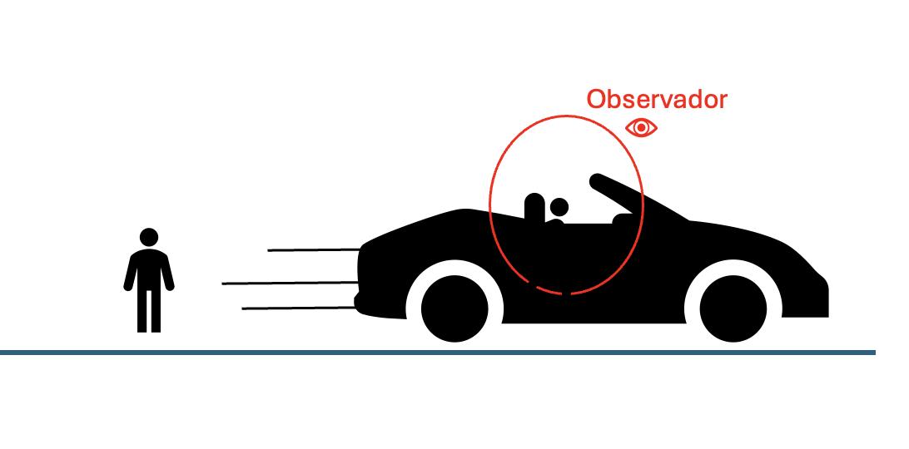
Figura 13 Observador dentro de un vehículo en movimiento#
En este curso siempre utilizaremos sistema de referencia inerciales descritos mediante un sistema de coordenadas cartesiano. El observador no se representa.
Trayectoria#
La trayectoria se define como la curva que describe una partícula cuando se mueve en el espacio.
{kind=link}
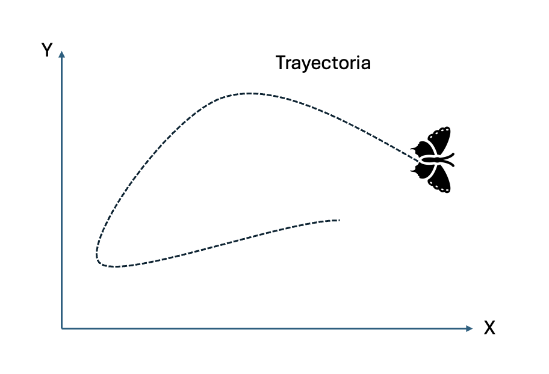
Figura 14 Trayectoría de un mariposa en el sistema de coordenadas cartesiano#
Posición#
la posición se define como el vector que une el origen del sistema de referencia, con un punto sobre la trayectoria en un tiempo determinado. Su unidad de medida en el S.I. es el metro.
{kind=link}
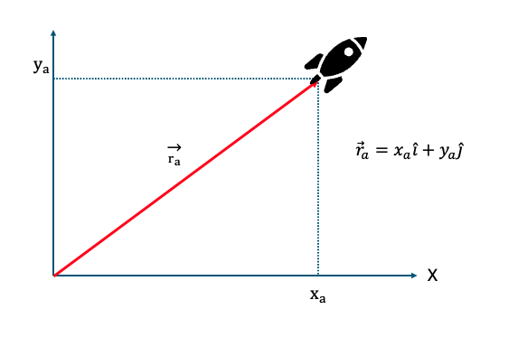
Figura 15 Posición de un cohete con su vector representativo#
3. Intervalo de tiempo#
El movimiento se estudia entre dos instantes:
instante inicial: \(t_i\)
instante final: \(t_f\)
El intervalo de tiempo se define como:
La unidad S.I. del tiempo es el segundo, \(s\).
4. Distancia recorrida y desplazamiento#
Distancia recorrida#
Es la longitud total del camino efectivamente seguido por la partícula.
Es una magnitud escalar y siempre es positiva o cero. Es un escalar. Su unidad de medida en S.I. es el metro. La distancia recorrida siempre es mayor o igual al desplazamiento. Se suele simbolizar por la letra \(d\), ya sea minúscula o mayúscula.
Desplazamiento#
Se define como el vector que une dos puntos sobre la trayectoria, en un intervalo de tiempo. Su unidad de medida en el S.I. es el metro. Analíticamente el desplazamiento se obtiene como:
donde:
\(r_i\) es la posición inicial;
\(r_f\) es la posición final.
\(\Delta\) se usa para destacar la diferencia, (resta) entre dos valores.
{kind=link}
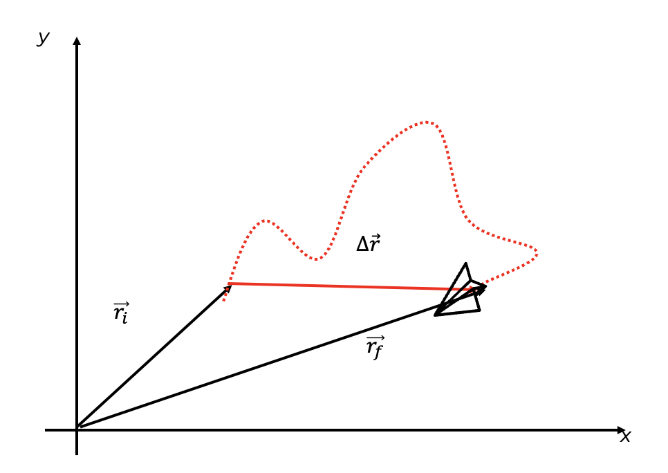
Figura 16 Desplazamiento de un avión de papel#
Observación importante#
La distancia recorrida y el desplazamiento no siempre coinciden.
Ejemplo:
Si una partícula va desde \(x = 2 \text{ m}\) hasta \(x = 8 \text{ m}\) y luego vuelve a \(x = 5 \text{ m}\):
distancia recorrida \((\Delta x)\): \(6 + 3 = 9 \text{ m}\)
desplazamiento \((\Delta \vec{x})\): \(5 - 2 = 3 \text{ m}\)
5. Rapidez media y velocidad media#
Rapidez media#
La rapidez media se define como la distancia recorrida dividida por el tiempo transcurrido:
Es una magnitud escalar.
Velocidad media#
La velocidad media se define como el desplazamiento dividido por el intervalo de tiempo:
Es un vector, por lo que su signo indica el sentido del movimiento. Su unidad de medida en el S.I. es m/s.
Interpretación del signo#
\(\bar{v} > 0\): movimiento hacia el sentido positivo del eje;
\(\bar{v} < 0\): movimiento hacia el sentido negativo;
\(\bar{v} = 0\): no hubo cambio neto de posición.
6. Velocidad instantánea#
La velocidad instantánea describe qué tan rápido y en qué sentido cambia la posición en un instante dado.
Matemáticamente se define como el límite de la velocidad media cuando el intervalo de tiempo tiende a cero:
En cálculo diferencial:
Interpretación gráfica#
En una gráfica de posición versus tiempo, la velocidad instantánea corresponde a la pendiente de la recta tangente a la curva en un punto.
{kind=link}
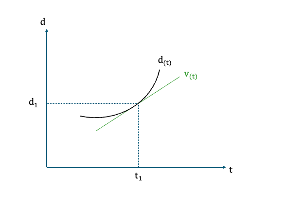
Figura 17 Interpretación de derivada del vector de posición respecto al tiempo o \((v_t)\)#
7. Aceleración media e instantánea#
La aceleración describe cómo cambia la velocidad en el tiempo.
Aceleración media#
donde:
Aceleración instantánea#
o equivalentemente:
Como la velocidad es derivada de la posición:
Interpretación física#
Si la aceleración y la velocidad tienen el mismo signo, la rapidez aumenta.
Si tienen signos opuestos, la rapidez disminuye.
Interpretación gráfica#
En una gráfica velocidad versus tiempo, la aceleración corresponde a la pendiente.
{kind=link}
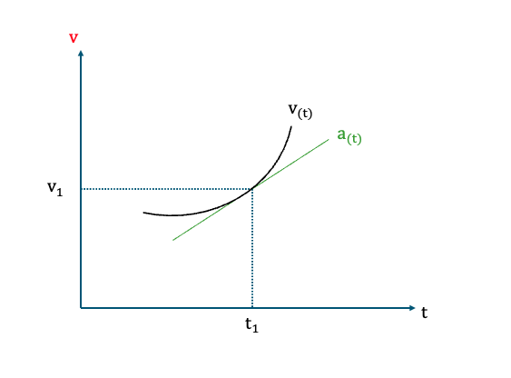
Figura 18 Interpretación de derivada del vector de velocidad respecto al tiempo o \((a_t)\)#
Ejemplo:#
{kind=link}
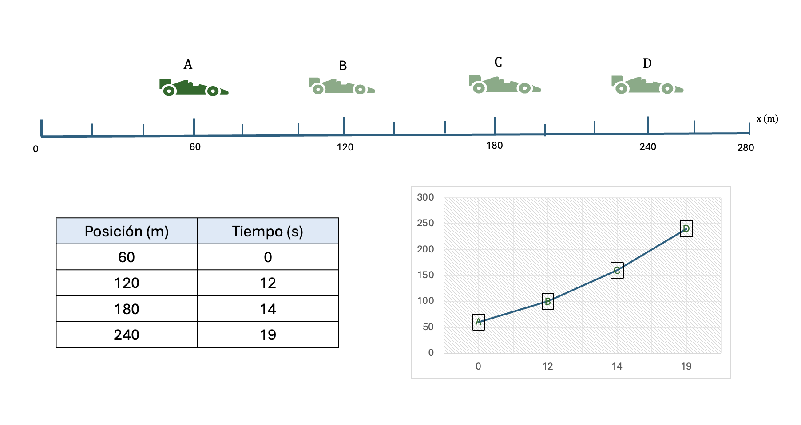
Figura 19 Movimiento de un vehiculo modelado como una partícula#
Figura 19: Un vehículo va hacia adelante a lo largo de una línea recta, ya que nos interesa sólo el movimiento traslacional del automóvil, se le modela como una partícula. Se pueden varias representaciones para la información del movimiento del automóvil. Como una representación pictórica del movimiento del automóvil (arriba); una representación tabular de su posición y tiempo (abajo a la izq.), y una representación gráfica (posición vs tiempo) del movimiento del automóvil (abajo a la derecha).
Calcule:
- Posición de la partícula en el punto B y en el punto C
- Distancia recorrida de la partícula desde A a B, desde B a C, dese C a D y desde A a D.
- Desplazamiento desde A hasta B
- Rapidez media desde B a C
- Velocidad media desde A a D
Desarrollo
a. \(d_B= 120\vec{i}\) y \(d_B=180\vec{i}\)
b. \({d_AB}= 60m, d_{BC}=60m, d_{CD}=60m, d_{AD}=180m\)
c. \(\Delta \vec{d_{AB}}=\vec{r_A}-\vec{r_B} = 60\vec{i}m\)
d. \(\vec{v_{BC}}=\frac{d_{BC}}{\Delta t} = \frac{60}{180-120} = 1 \frac{m}{s}\)
e. \(\vec{v_{AD}}=\frac{d_{AD}}{\Delta t} = \frac{180}{19} = 9,47 \vec{j} \frac{m}{s}\)
8. Movimiento rectilíneo uniforme (MRU)#
Un movimiento rectilíneo uniforme ocurre cuando la velocidad es constante.
Características#
Trayectoria recta.
Velocidad constante.
Aceleración nula.
Ecuación de posición (Ecuación itinerario)#
donde:
\(x_0\) es la posición inicial de la partícula
\(v\) es su velocidad
\(t_0\) es el tiempo inicial
{kind=link}
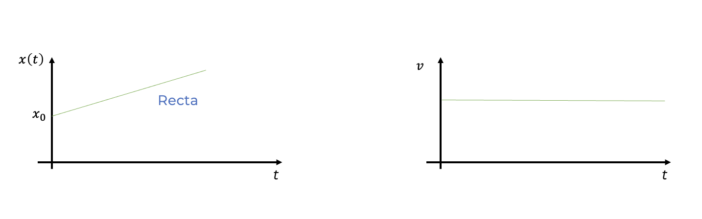
Figura 20 Gráficos de movimiento MRU#
Interpretación gráfica#
Gráfica \(x\) vs \(t\): una recta;
Gráfica \(v\) vs \(t\): una línea horizontal;
Gráfica \(a\) vs \(t\): una línea sobre cero.
9. Movimiento rectilíneo uniformemente acelerado (MRUA)#
Este movimiento ocurre cuando la aceleración es constante.
Ecuaciones fundamentales#
Posición en función del tiempo (Ecuación itinerario)#
Velocidad en función del tiempo#
Relación entre velocidad y posición#
{kind=link}
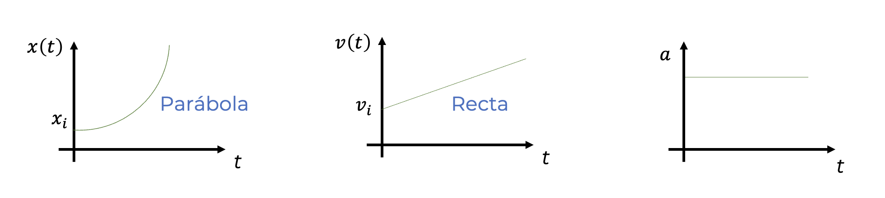
Figura 21 Gráficos de movimiento MRUA#
Interpretación gráfica#
gráfica \(x\) vs \(t\): parábola;
gráfica \(v\) vs \(t\): recta;
gráfica \(a\) vs \(t\): línea horizontal constante.
10. Relación entre gráficas y movimiento#
El análisis gráfico es fundamental en cinemática.
En una gráfica posición-tiempo#
La pendiente representa la velocidad.
En una gráfica velocidad-tiempo#
La pendiente representa la aceleración;
El área bajo la curva representa el desplazamiento.
En una gráfica aceleración-tiempo#
El área bajo la curva representa el cambio de velocidad.
Estas relaciones son una idea central en el tratamiento moderno de la cinemática. [1]
11. Caída libre#
La caída libre es un caso particular de movimiento rectilíneo uniformemente acelerado en dirección vertical, bajo la acción de la gravedad.
Si se desprecia la resistencia del aire, la aceleración es constante y vale:
Si el eje positivo apunta hacia arriba#
Entonces:
Las ecuaciones quedan:
Velocidad#
Posición#
Relación entre velocidad y posición#
Casos típicos#
Objeto que se deja caer: \(v_0 = 0\)
Lanzamiento vertical hacia arriba;
Lanzamiento vertical hacia abajo.
{kind=link}
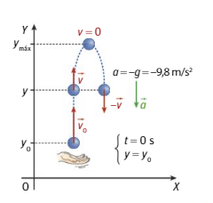
12. Significado físico del signo de la aceleración#
Es importante entender que una aceleración negativa no significa necesariamente que el objeto se esté frenando.
El signo solo indica dirección respecto del eje elegido.
Por ejemplo:
si un objeto se mueve hacia la izquierda y acelera hacia la izquierda, entonces tanto \(v\) como \(a\) son negativas, pero la rapidez aumenta;
si un objeto se mueve hacia la derecha y la aceleración apunta a la izquierda, entonces la rapidez disminuye.
13. Uso de derivadas e integración en cinemática#
En el enfoque formal de la cinemática:
la velocidad es la derivada de la posición;
la aceleración es la derivada de la velocidad.
Y en sentido inverso:
la posición puede obtenerse integrando la velocidad;
la velocidad puede obtenerse integrando la aceleración.
Esto conecta la cinemática con las herramientas fundamentales del cálculo. [1]
14. Aplicaciones típicas#
Los modelos de cinemática en una dimensión permiten resolver problemas como:
encuentro entre móviles
Frenado de un automóvil
Aceleración desde el reposo
Caída de objetos
Lanzamiento vertical
Cálculo de tiempo, desplazamiento y velocidad final.
15. Síntesis de la unidad#
En esta unidad se introdujeron las magnitudes fundamentales para describir el movimiento en una dimensión:
Posición
Desplazamiento
Distancia recorrida
Velocidad media e instantánea
Aceleración media e instantánea.
También se estudiaron dos modelos fundamentales:
Movimiento rectilíneo uniforme
Movimiento rectilíneo uniformemente acelerado.
Finalmente, se abordó la caída libre como una aplicación directa del MRUA.
Conceptos clave#
posición
sistema de referencia
intervalo de tiempo
desplazamiento
distancia recorrida
rapidez media
velocidad media
velocidad instantánea
aceleración media
aceleración instantánea
MRU
MRUA
caída libre
Fórmulas clave#
Guía asociada#
Guía 2: Cinemática de la partícula